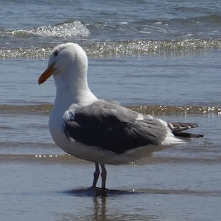
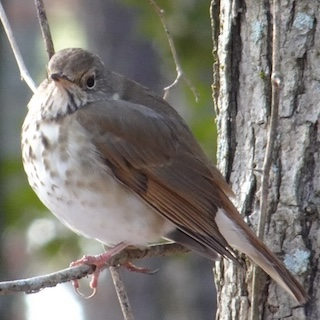
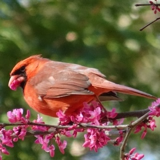

All About Birding
fun
birding
{kind=link}
Introduction
I love birding! So, welcome to my personal birding records.
Note: Only wild birds were recorded. All photos taken by me with Sony WX800.
The Next Bird I Want To See Is: Blue Jay.
“Watch Them Fly Above Your Head” - Bird List
| Picture | Common Name | Scientific Name | Last Seen | Family | Random Comments |
|---|---|---|---|---|---|
 |
American Crow | corvus brachyrhynchos | Jan ’25, Baltimore MD | Jays, Magpies, Crows, Ravens | |
| / | Common Raven | corvus corax | Nov ’24, Baltimore MD | Jays, Magpies, Crows, Ravens | “quoth the raven, ‘nevermore’” - quoth someone who died in Baltimore. |
 |
American Herring Gull | larus smithsonianus | Jan ’24, New York NY | Gulls, Terns, Skimmers | winter coat |
| Laughing Gull | leucophaeus atricilla | Oct ’23, Baltimore MD | Gulls, Terns, Skimmers | winter coat | |
 |
Ring-billed Gull | larus delawarensis | Jan ’25, Cambridge MD | Gulls, Terns, Skimmers | |
|  | California Gull | laurus californicus | July ’24, Cannon Beach OR | Gulls, Terns, Skimmers | |
 |
Glaucous-winged Gull | larus glaucescens | July ’24, Seattle, WA | Gulls, Terns, Skimmers | juveniles were seen eating a starfish - sadly they failed. |
 |
Caspian Tern | hydroprogne caspia | July ’24, Seattle WA | Gulls, Terns, Skimmers | |
 |
American Robin | turdus migratorius | Mar ’24, Baltimore MD | Thrushes | |
 |
Eastern Bluebird | sialia sialis | Mar ’22, Durham NC | Thrushes | |
|  | Hermit Thrush | catharus guttatus | Jan ’25, Cambridge MD | Thrushes | |
| Turkey Vulture | cathartes aura | Jan ’25, Cambridge MD | Vultures, Hawks, and Allies | if you go on a road trip they are always there | |
 |
Bald Eagle | haliaeetus leucocephalus | Jan ’25, Cambridge MD | Vultures, Hawks, and Allies | can be differentiated from turkey vulture while flying by their white tails |
| Red-tailed Hawk | buteo jamaicensis | Jan ’22, Durham NC | Vultures, Hawks, and Allies | ||
| Brant | branta bernicla | Jan ’24, New York NY | Waterfowl | can be identified by white neckline | |
| Canada Goose | branta canadensis | Jan ’25, Cambridge MD | Waterfowl | countless of them in blackwater NWR | |
| Tundra Swan | cygnus columbianus | Jan ’25, Cambridge MD | Waterfowl | small part of yellow on bills | |
 |
Mallard | anas platyrhynchos | Jan ’25, Cambridge MD | Waterfowl | sometimes mixed with domestic ducks |
 |
Hooded Merganser | lophydytes cucullatus | Jan ’25, Cambridge MD | Waterfowl | go around in couples |
| Double-crested Cormorant | nannopterum auritum | July ’24, Cannon Beach OR | Cormorants and Anhingas | ||
| / | Tufted Puffin | fratercula cirrhata | July ’24, Cannon Beach OR | Alcids | |
| / | Common Murre | uria aalge | July ’24, Cannon Beach OR | Alcids | |
 |
Brown Pelican | pelecanus occidentalis | July ’24, Cannon Beach OR | Pelicans | |
| Carolina Chickadee | poecile carolinensis | Mar ’22, Durham NC | Tits, Chickadees, and Titmice | ||
| Carolina Wren | thryothorus ludovicianus | Jan ’25, Cambridge MD | Wrens | ||
 |
Killdeer | charadrius vociferus | Jan ’25, Cambridge MD | Shorebirds | |
| Wilson’s Snipe | gallinago delicata | Jan ’25, Cambridge MD | Shorebirds | ||
 |
Great Blue Heron | ardea herodias | Jan ’25, Cambridge MD | Herons, Ibis, and allies | kinda everywhere |
| Great Egret | ardea alba | Mar ’22, New Orleans LA | Herons, Ibis, and allies | ||
 |
Rock Pigeon | columbia livia | Oct ’24, Baltimore MD | Pigeons and Doves | NYC pigeons are horribly fat |
 |
Downy Woodpecker | dryobates pubescens | Jan ’25, Cambridge MD | Woodpeckers | very small |
| Northern Mockingbird | mimus polyglottos | Jan ’25, Cambridge MD | Catbirds, Mockingbirds, and Thrashers | ||
 |
White-breasted Nuthatch | sitta carolinensis | Mar ’22, Durham NC | Nuthatches | |
 |
Ruby-crowned Kinglet | corthylio calendula | Mar ’22, Durham NC | Kinglets | |
| White-throated Sparrow | zonotrichia albicollis | Oct ’24, Baltimore MD | New World Sparrows | found dead around MICA, sadly | |
 |
House Sparrow | passer domesticus | May ’24, Boston MA | Old World Sparrows | white neckline |
| House Finch | haemorhous mexicanus | Mar ’22, Durham NC | Finches, Euphonias, and allies | ||
|  | Northern Cardinal | cardinalis cardinalis | Jan ’25, Cambridge MD | Cardinals, Grosbeaks, and allies | cutest and most iconic bird in the u.s.a. |
 |
European Starling | sturnus vulgaris | Mar ’24, Baltimore MD | Starlings and Mynas |
“Birdin’ U.S.A.” - Places I Went For Birding
Baltimore, MD: Inner Harbor

- First Visited: Aug 2023
- Last Visited: Dec 2024
- Birds: Canada Goose, Double-crested Cormorant, Laughing Gull, Mallard, Ring-billed Gull, Rock Pigeon
- Comments: From inner harbor to harbor east, the waterfront of downtown Baltimore is a great place to watch gulls & various kinds of waterfowls.
- Link: /
Cambridge, MD: Blackwater National Wildlife Refuge
{kind=link}
- First Visited: Jan 2025
- Last Visited: Jan 2025
- Birds: Bald Eagle, Canada Goose, Carolina Wren, Downy Woodpecker, Great Blue Heron, Hermit Thrush, Hooded Merganser, Killdeer, Mallard, Northern Cardinal, Northern Mockingbird, Ring-billed gull, Turkey Vulture, Whistling Swan, Wilson’s Snipe
- Comments: A perfect place for birding in Maryland, the most iconic bird being bald eagle. With woods, wetlands and ponds around the wildlife drive, you can see a variety of birds here. Also, the visitor center’s pick of merchandises is superb.
- Link: U.S. Fish & Wildlife Service: Blackwater National Wildlife Refuge
New York City, NY: Liberty Island

- First Visited: Jan 2024
- Last Visited: Jan 2024
- Birds: American Herring Gull, Brant, European Starling, Ring-billed Gull
- Comments: While New York City is full of fat rock pigeons, the liberty island is surprisingly a good place to watch waterfowls, and of course, gulls. Just mind your food, the gulls are really aggressive.
- Link: /
Harpers Ferry, WV: Maryland Heights
{kind=link}
- First Visited: Mar 2024
- Last Visited: Mar 2024
- Birds: Canada Goose, Mallard, Great Blue Heron, Turkey Vulture
- Comments: The river in the woods is a good place to catch up with our geese and heron friends.
- Link: National Park Service: Harpers Ferry
Durham, NC: Duke University
{kind=link}
- First Visited: Jan 2022
- Last Visited: Jan 2024
- Birds: Red-tailed Hawk, Northern Cardinal, Eastern Bluebird, Carolina Chickadee, American Robin, Carolina Wren, House Finch, Ruby-crowned Kinglet, White-breasted Nuthatch
- Comments: With birdfeeders everywhere, the Sarah P. Duke Garden is a great place for backyard birds like northern cardinal and eastern bluebird. I saw a red-tailed hawk with its nest near the old chemistry building. There are also some exotic waterfowls in the ponds of Duke Garden, like 鸳鸯&赤麻鸭 (not included above), but you can check the link below.
- Links: Exotic Waterfowls in Duke Garden | Duke Gardens
Seattle, WA: Discovery Park

- First Visited: July 2024
- Last Visited: July 2024
- Birds: Caspian Tern, Glaucous-winged gull, Great Blue Heron, American Crow
- Comments: With all its natural beauty, the discovery park is a great place to enjoy the views of volcano, forests and sea at one time - and of course, gulls.
- Link: Seattle.gov: Discovery Park
Cannon Beach, OR: Haystack Rock
{kind=link}
- First Visited: July 2024
- Last Visited: July 2024
- Birds: Brown Pelican, California Gull, Tufted Puffin, Common Murre, Double-crested Cormorant, American Crow
- Comments: It’s just heaven if you love shorebirds - all kinds of shorebirds are nesting on the cliff of haystack rock, just bring your binoculars since there’s a sign saying ‘birds only beyond this point’ - you would not be able to get too close to that rock. The volunteer is very friendly and helpful, and tidepools are also great fun to explore. Also, if you reside in Portland, be sure to check out Powell’s books, it has a great collection of field guides as well as other gems.
- Link: Friends of Haystack Rock
New Orleans, LA: Maurepas Swamp

- First Visited: Mar 2022
- Last Visited: Mar 2022
- Birds: Great Egret
- Comments: Went there as a part of swamp tour, feeding alligators and racoons with marshmallows etc.
- Link: Louisiana Dpt. of Wildlife & Fisheries: Maurepas Swamp
Links & Resources
Cornell Lab of Ornithology/Merlin Bird ID
Thanks Qinyi who introduced me to the world of birding. I always remember watching night heron with you sitting next to Bixia Pond back in 2019 in the afternoon before taking a Biology exam.